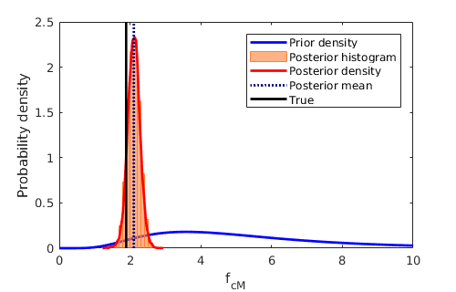

PCE based Kalman filter
In this example it is shown how to do the update of the PCE coefficient of the input variable using the PCE based Kalman-filter. (See Example 7 in the book chapter).
Contents
- 0) Initiate problem
- 1) Write , in a PCE form.
- 2) Generate a combined PCE basis
- 3) Rewrite the PCE coefficients in the extended basis
- 4) Compute the Kalman gain
- 4a) Compute the covariance matrices
- 4b) Compute the Kalman gain
- 5) Compute the coefficients of the updated input variables
- 5) Generate samples of the scaling factor
- Compute statistics
- Show statistics
- Plot prior and posterior densities
0) Initiate problem
Initiate_updates_RV() method = 'PCE_KF'; % number of samples for the pdf plots (this is only used for estimating the % probability density of $F_{cM}$) N= 10000;
1) Write , in a PCE form.
[q_i_alpha_1, V_q] = Q.gpc_expand() [e_l_beta, V_e] = E.gpc_expand();
q_i_alpha_1 =
0 1.0000
V_q =
1×2 cell array
{'h'} {2×1 double}
2) Generate a combined PCE basis
% First we bring the $Q$s to the PCE basis of $Y_h$ [V_qy, Pr_V_q, Pr_V_qy] = ... gpcbasis_combine(V_q, V_y, 'inner_sum', 'as_operators', true); q_i_alpha=q_i_alpha_1*Pr_V_q; upsilon_k_alpha=upsilon_k_alpha* Pr_V_qy; % The combined basis of $Q$, $Y$ and $E$ [V_c, Pr_V_qy, Pr_V_e] = ... gpcbasis_combine(V_qy, V_e, 'outer_sum', 'as_operators', true);
3) Rewrite the PCE coefficients in the extended basis
Please, note, that the order of the basis functions are different here then the one used in the chapter and thus the coefficient matrices deviate from the one given in the chapter)
q_i_gamma=q_i_alpha*Pr_V_qy; z_j_gamma=upsilon_k_alpha*Pr_V_qy + e_l_beta*Pr_V_e; zm_j_gamma = zeros(size(z_j_gamma)); zm_j_gamma(:, 1) = z_m;
4) Compute the Kalman gain
4a) Compute the covariance matrices
% Autocovariance of the measurable response C_y=gpc_covariance(upsilon_k_alpha, V_y); % Covariance of $Q$ and $Y$ C_qy=gpc_covariance(q_i_alpha, V_y, upsilon_k_alpha); % Covariance of the measurement noise C_e=gpc_covariance(e_l_beta, V_e);
4b) Compute the Kalman gain
% Covariance of the measurment model C_z = C_y+C_e; % The Kalman gain K = C_qy/C_z;
5) Compute the coefficients of the updated input variables
q_p_i_gamma = q_i_gamma +K* (zm_j_gamma-z_j_gamma);
5) Generate samples of the scaling factor
% sample from the PCE of the updated input parameter q_j = gpc_sample(q_p_i_gamma, V_c, N); % map to the scaling factor f_cm_j = q2f(q_j);
Compute statistics
% mean of the posterior density f_cm_mean = mean(f_cm_j ,2); % variance of the posterior density f_cm_var = var(f_cm_j , [],2);
Show statistics
display(strvarexpand('Prior mean: $F_cm.mean$')); display(strvarexpand('Prior variance: $F_cm.var$')); display(strvarexpand('True value: $f_cm_true$')); display(strvarexpand('Posterior mean: $f_cm_mean$')); display(strvarexpand('Posterior variance: f_cm_var=$f_cm_var$'));
Prior mean: 5.5 Prior variance: 10 True value: 1.89 Posterior mean: 2.10658 Posterior variance: f_cm_var=0.0302602
Plot prior and posterior densities
bin_width = 0.1; plot_prior_and_posterior_densities